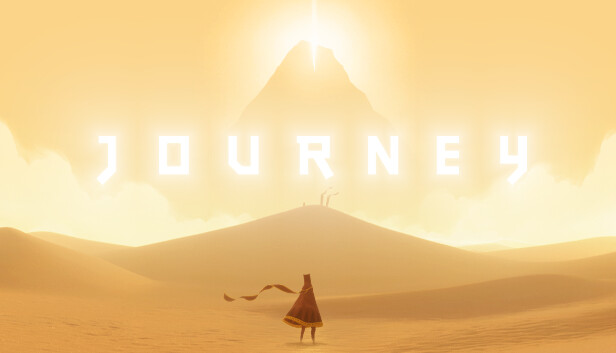

Journey é um jogo de aventura e exploração desenvolvido pela Thatgamecompany. O jogo coloca o jogador no controle de uma figura misteriosa vestida com um manto vermelho, atravessando um vasto deserto em direção a uma montanha iluminada ao longe. Diferente de muitos jogos tradicionais, Journey possui foco na experiência emocional e artística, utilizando poucos diálogos e contando sua história principalmente através do ambiente e da música. O gameplay é simples e acessível, envolvendo exploração, pequenos puzzles e movimentação fluida pelos cenários. O personagem pode deslizar pela areia, saltar e utilizar um cachecol mágico que permite voar por curtas distâncias. Durante a jornada, o jogador pode encontrar outros jogadores online de forma anônima, cooperando sem comunicação por voz ou texto. Os gráficos possuem um estilo artístico muito elogiado, com cenários belos e iluminação marcante. A trilha sonora é considerada um dos pontos mais fortes do jogo, ajudando a criar momentos emocionantes e memoráveis. A narrativa aborda temas como solidão, amizade, esperança e superação de dificuldades. No geral, Journey é visto como uma experiência única e um dos jogos independentes mais importantes da indústria.
Livre - recomendado para todas as idades
A história de Journey começa em um enorme deserto onde uma figura misteriosa desperta sozinha diante de uma grande montanha brilhante ao longe. Sem explicações diretas, o jogador inicia uma longa viagem atravessando ruínas antigas, dunas gigantes e estruturas abandonadas pertencentes a uma civilização esquecida. Conforme avança pela jornada, o personagem encontra símbolos e murais que revelam partes da história daquele mundo misterioso. Aos poucos, o jogador descobre que uma antiga sociedade utilizava magia e energia para prosperar, mas acabou entrando em declínio devido a conflitos e desequilíbrios causados pelo próprio poder. Durante a aventura, o ambiente muda constantemente, apresentando áreas mais tranquilas e outras cheias de perigos. Em alguns momentos, o jogador pode encontrar viajantes controlados por outras pessoas online, criando experiências cooperativas silenciosas e emocionantes. A narrativa não utiliza diálogos tradicionais, permitindo que cada jogador interprete os acontecimentos de maneira pessoal. O jogo transmite emoções através da música, da direção artística e da atmosfera dos cenários. Ao longo da jornada, temas como esperança, companheirismo, ciclo da vida e perseverança são explorados de maneira simbólica. Isso faz com que Journey seja lembrado mais como uma experiência emocional do que apenas um jogo de aventura comum.
13 de março de 2012
Entre R$25 e R$80 (dependendo da plataforma e promoções)
Aproximadamente 4 GB